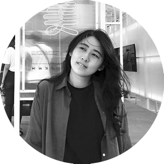

ARIEL
LIN

個人資料 PROFILE
- 林沛蓁 Ariel Lin
- 1995
- 平面設計工作者 / 網頁設計修行中
- 獨立接案，內容涵蓋：
- 活動主視覺設計、編排設計、延伸設計、婚禮小物設計等。
學歷 EDUCATION
- 銘傳大學 商業設計學系 學士學位 | 2013－2017
- 台北市立陽明高級中學 | 2010－2013
- 福和國民中學 美術班 | 2007－2010
技能 SKILL
- Adobe Illustrator
- Adobe Photoshop
- Word PowerPoint
- HTML CSS
- 語言：中文、英文
工作經驗 WORK EXPERIENCE
-
傑意整合行銷有限公司 平面設計 | 2018/11－2020/05
針對不同規模之婚禮、晚宴、運動賽事，與企劃共同發想活動主題，進行主視覺設計、延伸設計週邊製作物，設計不再局限於平面形式，製作物包含邀卡禮品手冊編排等，大至吊旗看板，進行空間規劃，並熟悉與印務溝通發包流程。任職期間曾參與製作如：台灣女子高球公開賽、裙襬搖搖LPGA等大型國際賽事，增添視野。於活動現場，我亦共同參與活動執行，面對活動各種突發狀況，訓練臨場應變能力。
-
友均實業股份有限公司 平面設計 | 2018/03－2020/10
任職期間於各大電商平台製作活動banner、商品文案圖、電子報、負責官網商品一頁式網站，及實體門市輔銷物等。不論何種風格，皆能做出符合該檔期主題之設計，並針對不同商品，使用合適的方法及邏輯作圖。同時接觸行銷，操作管理粉專後台，撰寫短篇文案；設計與行銷並行，針對不同的目標客群，達到每篇貼文所要傳達的訴求。